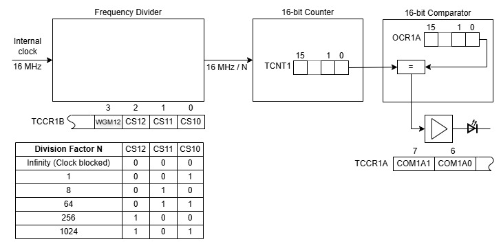

В предыдущих этюдах (первый, второй, третий), посвящённых миганию светодиодом под управлением таймера, счётчик считал входные импульсы, и при некотором событии генерировалось прерывание. Само мигание светодиодом, то есть его включение и выключение, было реализовано кодом в обработчике прерывания. Код этот короткий, но можно обойтись вообще и без него, и без прерывания: таймер в микроконтроллере Arduino, один раз запрограммированный, дальше может мигать светодиодом сам без единой строчки кода, не нагружая процессор. Здесь изучается эта возможность.
Упрощённо, компаратор, сравнивающий число в счётчике (TCNT1) с заранее заданным числом (OCR1A) (см. предыдущий этюд), имеет физический выход (пин 9 Arduino UNO), на котором при совпадении чисел выставляется заданный уровень: 0, 1 или инверсия текущего состояния, что выбирается битами COM1A1 и COM1A0 в регистре TCCR1A. К пину 9 можно подключить светодиод. Чтобы он мигал, нужно выполнить действия, описываемые следующей программой:
void setup() {
TCCR1A = (1 << COM1A0); // включить инверсию текущего состояния для выхода OC1A (пин 9)
TCCR1B = (1 << CS12) | (1 << WGM12); // Задать коэф-т деления k=256 и включить режим CTC
OCR1A = 31249; // записать в компаратор число, вместе с k=256 дающее миигание на 1 Гц
DDRB |= 0b00000010; // пин 9 настроить как выход
}
void loop() {
}
После загрузки светодиод, подключённый к пину 9 Arduino, мигает с частотой 1 Гц. Процессор лишь однократно выполняет функцию setup(), а цикл loop() пуст и свободен для размещения в нём другой программы. Светодиод при этом будет мигать "сам по себе".
Чертёж иллюстрирует эту конфигурацию.

Добавить в программу из предыдущего этюда режим, в котором внешний светодиод мигает с управляемой частотой, не нагружая процессор.
Добавлен ещё один режим, задаваемый командой m=2, а фактически включающийся при при обработке команды c=десятичное число, которая задаёт значение в компараторе. Исходно программа запускает таймер в режиме Normal с параметрами, при которых встроенный светодиод мигает с частотой 1 Гц. Если ввести команду m=1 и затем c=десятичное число, то программа переведёт таймер в режим CTC, встроенный светодиод будет мигать с частотой, определяемой переданным числом и коэффициентом деления, который можно менять командой d=двоичный код коэффициента деления. Если ввести команду m=2 и затем c=десятичное число, то мигать будет внешний светодиод, подключённый через резистор к пину 9 Arduino. И в этом случае частота определяется значениями, переданными в параметрах c и d. Rак определить параметры для получения нужной частоты см. в двух предыдущих этюдах (этми и этом).
Команда ?= выведет общую информацию о программе и командах. Команда ?=команда выведет информацию о конкретной команде. Например, в этом этюде ответ на команду ?= указывает на поддержку команд m, d и c. Об этих командах и их параметрах можно узнать, соответственно, по команде ?=m, ?=d и ?=c.
Текст программы содержится в файле Ind_y_Ardu.ino, который можно получить с Github по ссылке.
Как вариант, для получения файла можно взять с Github весь репозиторий цикла "Ардуино и индикаторы" и выполнить соответствующую команду:
git restore -s LED_ext01 -- Ind_y_Ardu.ino
Соответствующие файлы в рабочей области будут перезаписаны требуемой версией.